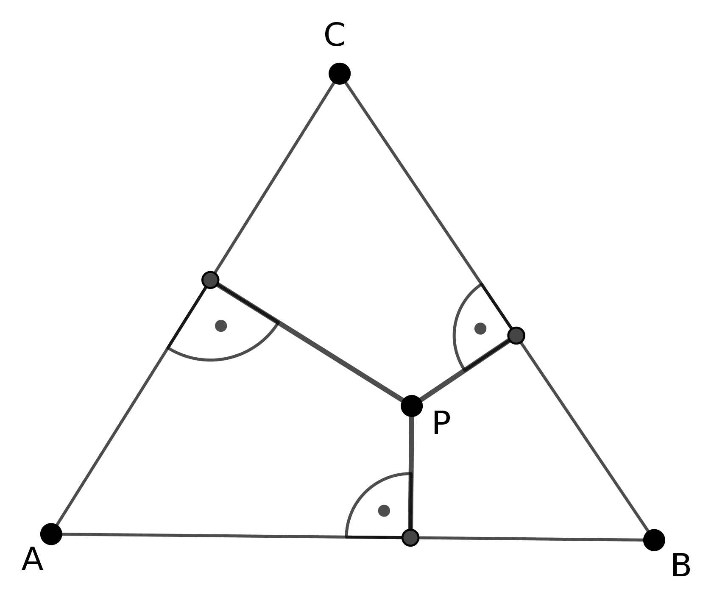
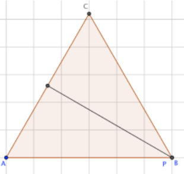
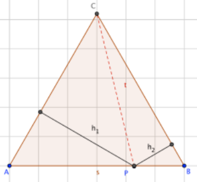
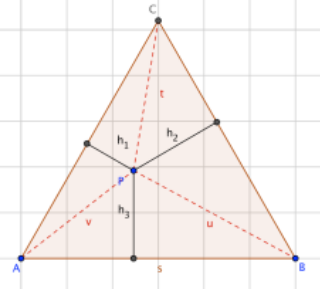
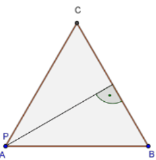
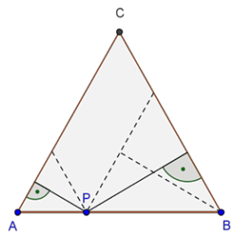
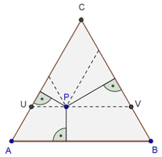

Aufgabe 1.9
Gegeben ist ein gleichseitiges Dreieck $ABC$ und ein Punkt $P$ im Innern des Dreiecks. Zeige, dass für jede Lage von $P$ die Summe seiner Abstände zu den Seiten des Dreiecks konstant ist.

- Untersuchen Sie zunächst Spezialfälle: Was passiert, wenn $P$ auf einer Ecke oder Seite liegt?
- Zerlegen Sie das grosse Dreieck in Teildreiecke mit $P$ als gemeinsamer Ecke
- Nutzen Sie die Flächenformel $A = \frac{1}{2} \cdot \text{Grundseite} \cdot \text{Höhe}$
- Beachten Sie, dass im gleichseitigen Dreieck alle Seiten gleich lang sind
Behauptung: Die Summe aller Abstände von $P$ zu den drei Seiten des Dreiecks ist für $P$ im Innern des Dreiecks gleich gross.
Variante A.
Es lohnt sich, die Situation in GeoGebra zu erkunden, indem extreme Lagen von möglichen Punkten $P$ untersucht werden. Wenn $P$ nämlich auf eine der drei Ecken fällt, ist die Summe der Abstände gerade gleich gross wie die Höhe des Dreiecks:

Weiter könne von Interesse sein, wenn $P$ auf eine der Dreiecksseiten zu liegen kommt:

Nun ist zu zeigen, dass der Streckenzug bestehend aus den beiden Abständen gleich gross ist, wie die Höhe des Dreiecks. Dazu verbindet man $P$ mit der gegenüberliegenden Ecke, in unserem Fall $C$. Die so entstandene Strecke $t$ unterteilt das Dreieck $ABC$ in zwei Teildreiecke, deren Flächeninhalte wir wie folgt addieren: \[A_{\Delta ABC}=A_{\Delta APC}+A_{\Delta PBC}=\frac{s\cdot h_1}{2}+\frac{s\cdot h_2}{2}=\frac{s\cdot (h_1+h_2)}{2}\] Weil nun aber auch gilt: \[A_{\Delta ABC}=\frac{s\cdot h}{2}\] folgt, dass $h_1+h_2=h$ gilt.
Nun betrachten wir eine beliebige Lage des Punktes P im Innern des Dreiecks:

Wiederum lässt sich nun die Dreiecksfläche durch die drei Teildreiecke berechnen, die durch die Strecken zwischen $P$ zu den drei Eckpunkten entstehen: \[A_{\Delta ABC}=\frac{s\cdot h_1}{2}+\frac{s\cdot h_2}{2}+\frac{s\cdot h_3}{2}\]
Daraus folgt wiederum, analog zur Argumentation vorher, dass die Summe der drei Abstände gleich der Länge der Dreieckshöhe ist. Daraus folgt, dass diese Summe unabhängig von der Lage des Punktes $P$ konstant ist.
Variante B.
Alternativ zum bei Variante A gewählten Flächenansatz liessen sich die Teilhöhen zur Gesamthöhe zusammensetzen:
Wiederum gehen wir vom Spezialfall aus, bei dem $P$ auf eine Ecke liegt:

Wenn wir nun den Fall betrachten, bei dem $P$ auf einer Seite liegt, sehen wir, dass die Höhen der beiden eingezeichneten Teildreiecke zusammen die Höhe des Gesamtdreiecks ergeben:

Und schliesslich sehen wir beim allgemeinen Fall, dass sich dieser auf den eben besprochenen Fall zurückführen lässt: Im Teildreieck $UVC$ gilt die Behauptung, wie eben gezeigt. Nun können noch die dritte Höhe hinzufügen, womit wir in der Summe wiederum die Höhe des Gesamten Dreiecks erhalten.

Damit ist gezeigt, dass unabhängig von der Lage des Punktes P die Summe der Abstände auf die Seiten stets konstant ist.
Im Video: Etappe 7 · Lehrplan 21 bei 7:22